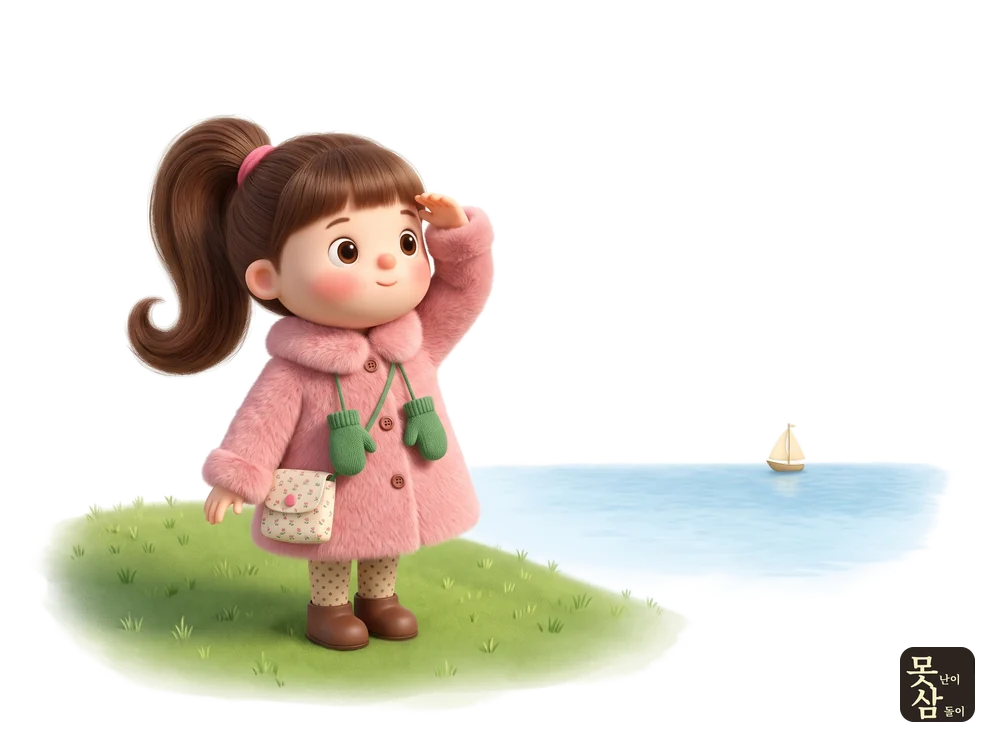
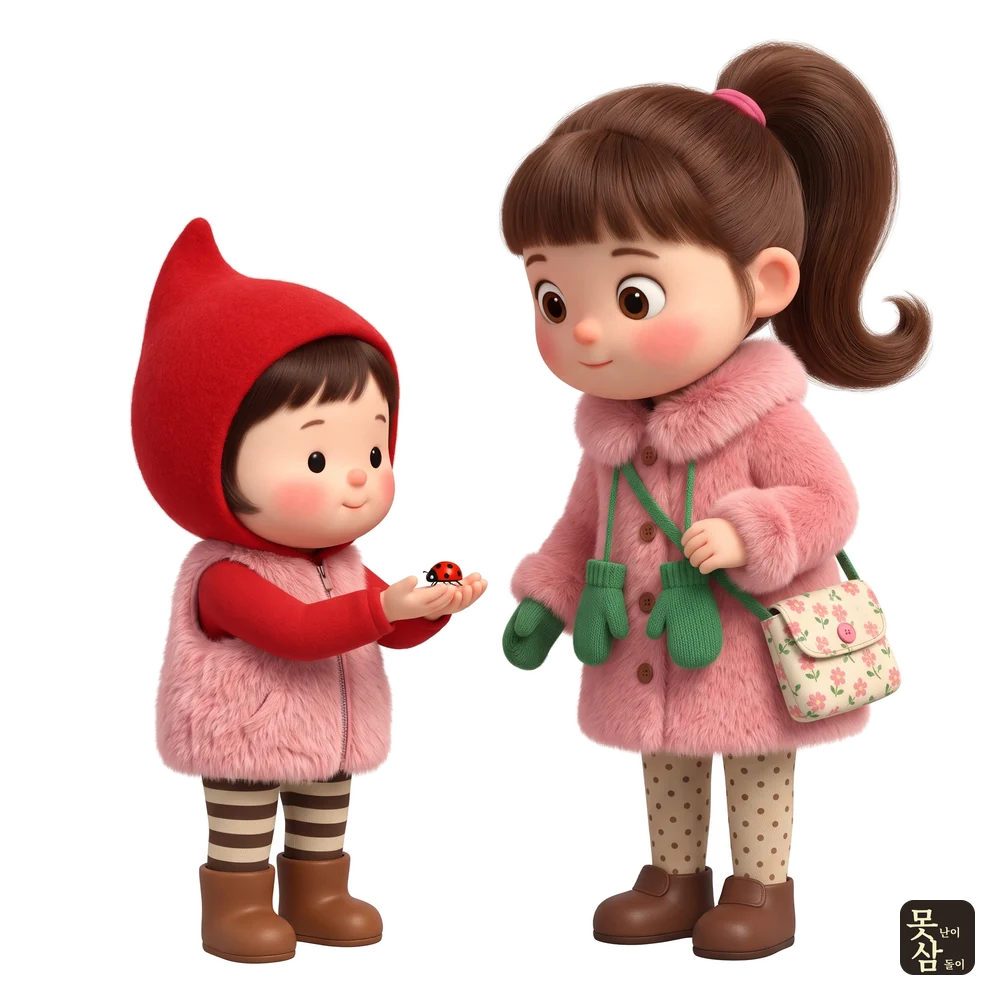
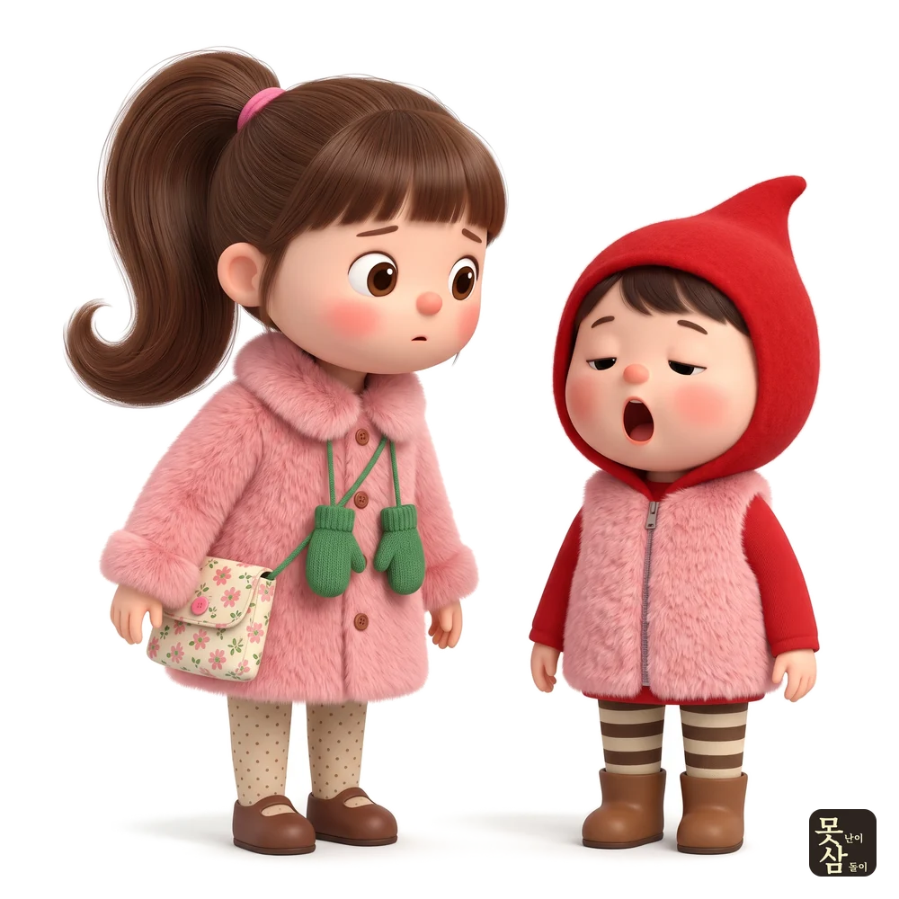
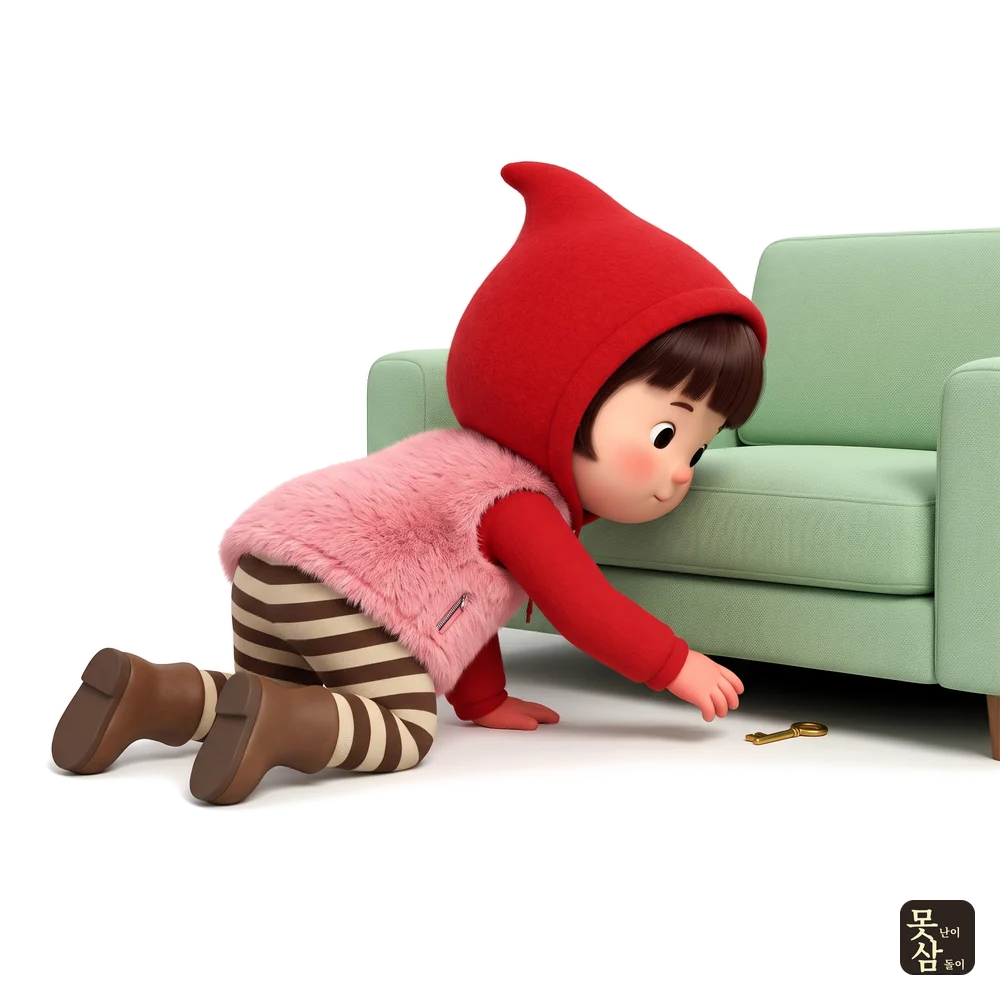

WORD 27 · 내 몸으로 움직이는 기본 동작
LOOK
내가 눈길을 보낸다


Look at this.
눈길을 이것에 보낸다

You look tired.
눈길을 보내니 피곤한 얼굴이다

Look for your key.
열쇠 쪽으로 눈길을 보낸다(찾는다)
짝SEE와 짝 · see는 눈에 들어오고, look은 내가 눈길을 보낸다.
질문 보내기모르는 건 메일로 물어봐